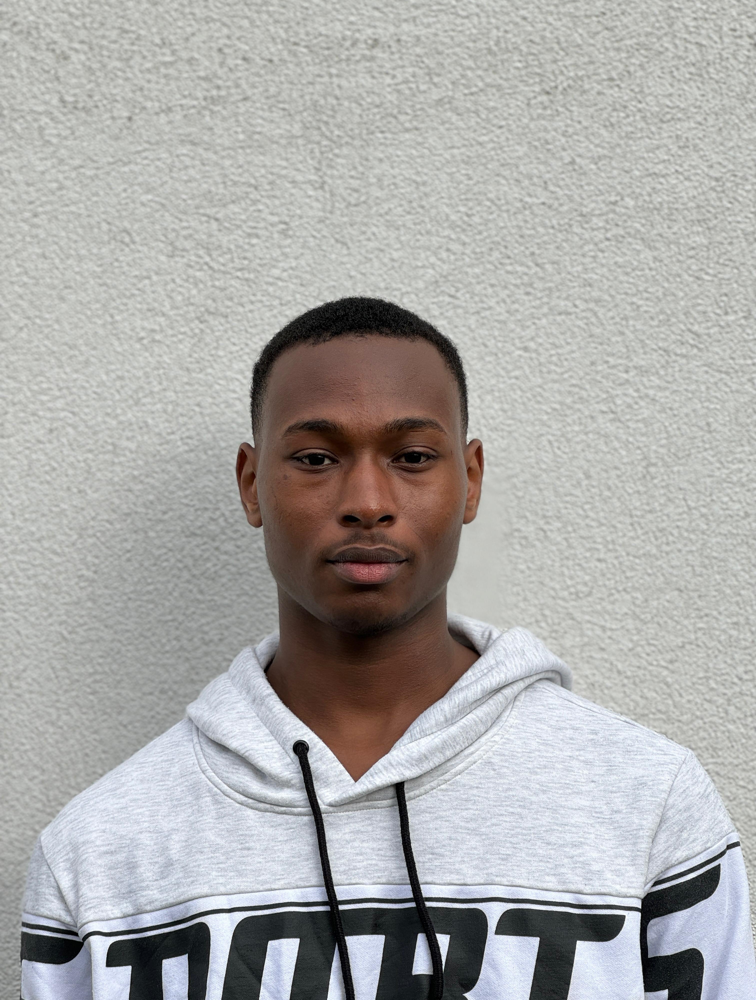

Born in Stolberg, Germany, and raised in Lagos, I've been shaped by two distinct cultures. Growing up amidst the vibrant energy of Lagos sparked my passion for exploring different cultures. Now, I'm on a mission to bridge cultural divides and celebrate diversity through my work. Join me as we journey together, embracing the richness of our shared humanity.

About
My strengths lie more in research than in design but since the beginning of the semestser , I have been able to build my design skills through research and I feel a bit more confident in my design skills than I was in the last semester